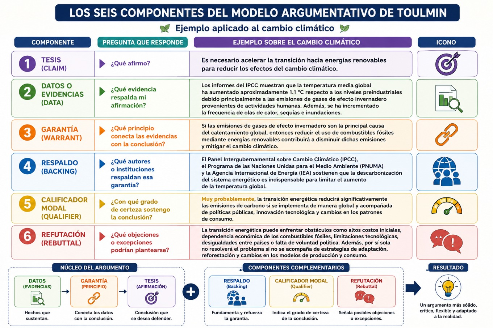
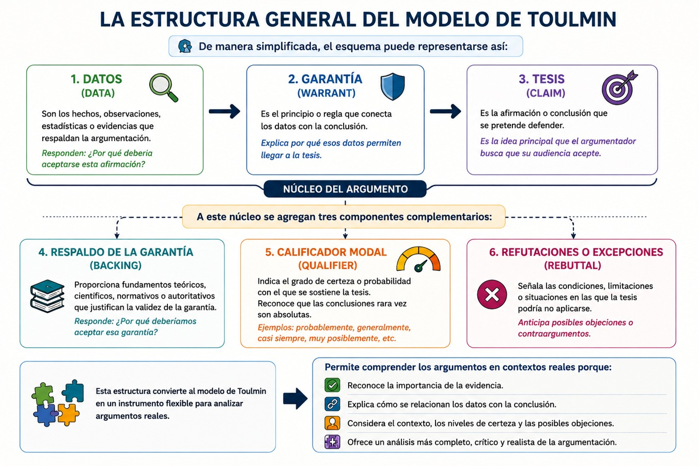
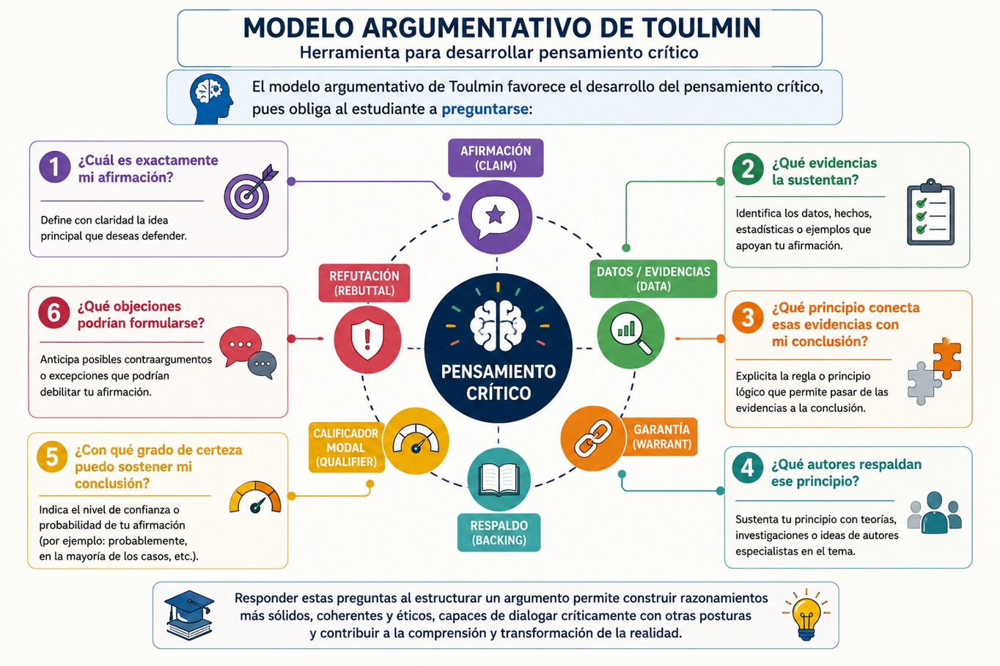
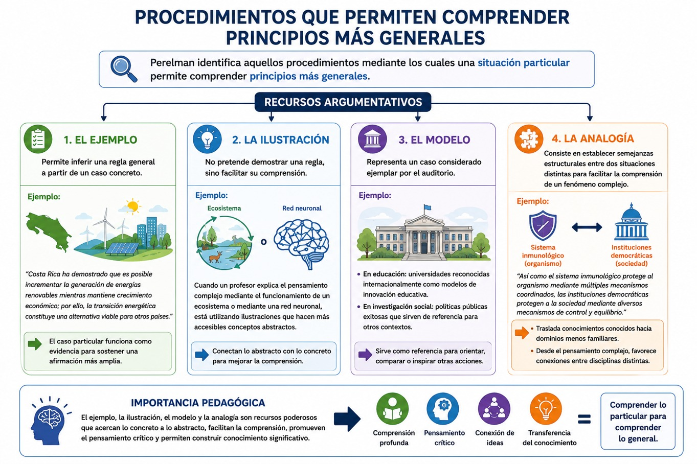

La argumentación constituye una de las competencias intelectuales más importantes dentro de la educación superior, pues permite justificar afirmaciones mediante razones, evaluar críticamente las ideas propias y ajenas y participar en la construcción colectiva del conocimiento. Sin embargo, durante mucho tiempo la enseñanza de la argumentación estuvo dominada por la lógica formal aristotélica, la cual privilegia la validez deductiva de los razonamientos y parte del supuesto de que las conclusiones se derivan necesariamente de las premisas. Aunque este enfoque resulta indispensable para las matemáticas y las ciencias formales, presenta limitaciones cuando se pretende analizar los argumentos que utilizan las personas en la vida cotidiana, en las ciencias sociales, en el derecho o en la deliberación política.
En este contexto surge la propuesta del filósofo británico Stephen Edelston Toulmin (1922-2009), quien en su obra The Uses of Argument (1958) cuestionó la idea de que todos los razonamientos pudieran evaluarse exclusivamente mediante criterios de lógica formal. Para Toulmin, la argumentación ocurre en escenarios reales caracterizados por la incertidumbre, la diversidad de perspectivas y la necesidad de justificar las afirmaciones con base en evidencia contextual. Su modelo representa uno de los aportes más influyentes de la teoría contemporánea de la argumentación porque desplaza la atención desde la estructura puramente lógica hacia la manera en que las personas justifican racionalmente sus afirmaciones en situaciones concretas.
El surgimiento del modelo de Toulmin
Durante gran parte del siglo XX predominó la idea de que un argumento válido debía ajustarse a los principios de la lógica deductiva. Bajo este paradigma, un razonamiento era correcto únicamente cuando la conclusión podía derivarse necesariamente de las premisas mediante reglas formales. Toulmin observó que esta visión resultaba insuficiente para explicar cómo argumentan realmente científicos, abogados, médicos, periodistas o ciudadanos en la resolución de problemas cotidianos. En estos ámbitos, las conclusiones rara vez poseen certeza absoluta; por el contrario, se sostienen con distintos grados de probabilidad dependiendo de la calidad de las evidencias disponibles y del contexto donde se producen.
Su principal crítica consistió en señalar que los argumentos prácticos son contextuales, es decir, dependen del campo disciplinario, de los criterios aceptados por una comunidad y de la evidencia disponible. La fuerza de un argumento no reside únicamente en su forma lógica, sino en la calidad de las razones que lo sustentan. De esta manera, Toulmin propone una lógica práctica orientada a comprender cómo las personas justifican racionalmente sus afirmaciones en situaciones reales de deliberación.
Los seis componentes del modelo argumentativo
La principal aportación de Toulmin consiste en identificar seis elementos que intervienen en la construcción de un argumento sólido:
1. La tesis o afirmación (Claim): La tesis constituye la idea principal que el argumentador pretende defender. Es la conclusión a la que desea convencer a su audiencia. Toda argumentación parte de una afirmación susceptible de ser aceptada, rechazada o discutida.
Por ejemplo:
" Es necesario acelerar la transición hacia energías renovables para reducir los efectos del cambio climático.”
Esta constituye la afirmación que posteriormente será sustentada mediante razones y evidencias.
2. Los datos o evidencias (Data): Los datos representan los hechos, observaciones, estadísticas, investigaciones o evidencias empíricas que respaldan la tesis. Las evidencias permiten responder la pregunta: ¿Por qué debería aceptarse esta afirmación?
Por ejemplo:
“Los informes del IPCC muestran que la temperatura media global ha aumentado aproximadamente 1.1 °C respecto a los niveles preindustriales debido principalmente a las emisiones de gases de efecto invernadero provenientes de actividades humanas. Además, se ha incrementado la frecuencia de olas de calor, sequías e inundaciones.”
Sin evidencias, la tesis permanece como una simple opinión.
3. La garantía (Warrant): La garantía constituye probablemente el elemento más innovador del modelo de Toulmin. Se trata del principio lógico que conecta los datos con la conclusión. Mientras los datos indican qué sabemos, la garantía explica por qué esos datos permiten llegar a la conclusión.
Siguiendo el ejemplo anterior:
Garantía
“Si las emisiones de gases de efecto invernadero son la principal causa del calentamiento global, entonces reducir el uso de combustibles fósiles mediante energías renovables contribuirá a disminuir dichas emisiones y mitigar el cambio climático.”
Muchas veces las garantías permanecen implícitas porque forman parte del conocimiento compartido por una comunidad.
4. El respaldo (Backing): El respaldo fortalece la garantía proporcionando fundamentos teóricos, científicos o normativos que justifican su validez. El respaldo responde a la pregunta: ¿Por qué deberíamos aceptar esa garantía?
Siguiendo el ejemplo anterior:
Respaldo
El Panel Intergubernamental sobre Cambio Climático (IPCC), el Programa de las Naciones Unidas para el Medio Ambiente (PNUMA) y la Agencia Internacional de Energía (IEA) sostienen que la descarbonización del sistema energético es indispensable para limitar el aumento de la temperatura global.
5. El calificador modal (Qualifier): Una de las mayores innovaciones de Toulmin consiste en reconocer que pocas afirmaciones son absolutamente verdaderas. Por ello incorpora los calificadores modales, expresiones que indican el grado de certeza de una conclusión.
Algunos ejemplos son:
- • probablemente
- • generalmente
- • casi siempre
- • muy posiblemente
- • en la mayoría de los casos
- • difícilmente
Siguiendo el ejemplo anterior sería más adecuado señalar:
“Muy probablemente, la transición energética reducirá significativamente las emisiones de carbono si se implementa de manera global y acompañada de políticas públicas, innovación tecnológica y cambios en los patrones de consumo.”
Con ello el argumento gana honestidad intelectual.
6. La refutación (Rebuttal): Finalmente, Toulmin reconoce que todo argumento posee límites y condiciones bajo las cuales podría no cumplirse. La refutación identifica posibles excepciones o contraargumentos.
Por ejemplo:
" La transición energética puede enfrentar obstáculos como altos costos iniciales, dependencia económica de los combustibles fósiles, limitaciones tecnológicas, desigualdades entre países o falta de voluntad política. Además, por sí sola no resolverá el problema si no se acompaña de estrategias de adaptación, reforestación y cambios en los modelos de producción y consumo.
Lejos de debilitar el argumento, reconocer sus límites fortalece su credibilidad.
A continuación podrás ver gráficamente los seis componentes del modelo argumentativo de Toulmin:

La estructura general del modelo
De manera simplificada, el esquema puede representarse así:
Datos → Garantía → Tesis
A este núcleo se agregan tres componentes complementarios:
- • Respaldo de la garantía.
- • Calificador modal.
- • Refutaciones o excepciones.
Esta estructura convierte al modelo de Toulmin en un instrumento flexible para analizar argumentos reales. Observa el siguiente diagrama:

Uno de los aspectos más relevantes del modelo consiste en su estrecha relación con el pensamiento complejo pues mientras que la lógica clásica busca demostrar verdades universales; Toulmin, en cambio, reconoce que el conocimiento se produce en contextos abiertos donde existen incertidumbre, información incompleta y múltiples perspectivas. Desde esta visión, argumentar implica comprender la complejidad de la realidad antes que reducirla a relaciones lineales de causa y efecto.
Esta perspectiva coincide con Edgar Morin, quien, como hemos visto, sostiene que el conocimiento debe reconocer las interacciones, retroacciones, emergencias e incertidumbres presentes en los sistemas complejos. De manera semejante, Toulmin entiende que la fortaleza de un argumento depende de la calidad de sus justificaciones, de su contexto y de la consideración de posibles objeciones, más que de una supuesta certeza absoluta. En consecuencia, ambos enfoques promueven una racionalidad abierta, crítica y reflexiva.
El modelo argumentativo de Toulmin favorece el desarrollo del pensamiento crítico, pues obliga te obliga a preguntarte:
- • ¿Cuál es exactamente mi afirmación?
- • ¿Qué evidencias la sustentan?
- • ¿Qué principio conecta esas evidencias con mi conclusión?
- • ¿Qué autores respaldan ese principio?
- • ¿Con qué grado de certeza puedo sostener mi conclusión?
- • ¿Qué objeciones podrían formularse?
Estas preguntas transforman la argumentación en un proceso de reflexión metacognitiva que fortalece la calidad del razonamiento. Observa el siguiente diagrama:

- Gutiérrez, Silvia (1989). La argumentación, en Argumentos Estudios Críticos de la Sociedad: México: Universidad Autónoma Metropolitana, Unidad Xochimilco. Núm. 8, diciembre.
- Toulmin, S. E. (2003). Los usos de la argumentación. Barcelona: Península.
- Toulmin, S. E. (2003). Regreso a la razón: El debate entre la racionalidad y la experiencia y práctica personales en el mundo contemporáneo. Barcelona: Península.
- Toulmin, S. E., Rieke, R., & Janik, A. (1984). An Introduction to Reasoning (2nd ed.). Macmillan.
Te recomendamos ver estos videos para profundizar sobre este tema:
El modelo argumentativo de Chaim Perelman
Como hemos visto, durante varios siglos el estudio de la argumentación permaneció subordinado a la lógica formal heredada de Aristóteles y desarrollada posteriormente por la lógica matemática moderna. Bajo esta perspectiva, la racionalidad se identificó con la demostración deductiva, es decir, con aquellos razonamientos en los que la conclusión se desprende necesariamente de premisas verdaderas mediante reglas estrictamente formales. Aunque este paradigma resultó extraordinariamente exitoso para las matemáticas y las ciencias exactas, mostró importantes limitaciones cuando se intentó explicar la manera en que las personas deliberan acerca de problemas éticos, jurídicos, políticos o sociales. En estos ámbitos las decisiones no dependen únicamente de la aplicación de reglas lógicas, sino también de valores, experiencias compartidas, interpretaciones, contextos históricos y procesos de persuasión racional. Las controversias humanas rara vez pueden resolverse mediante demostraciones apodícticas; por el contrario, requieren construir argumentos capaces de obtener la adhesión de quienes participan en la deliberación.
En este contexto emerge la obra del filósofo belga Chaim Perelman (1912-1984), quien, junto con Lucie Olbrechts-Tyteca, desarrolla una de las contribuciones más importantes de la filosofía contemporánea de la argumentación: la Nueva Retórica. Su propósito consistió en recuperar el valor filosófico de la retórica clásica, no como un conjunto de recursos ornamentales del lenguaje, sino como una teoría general de la argumentación orientada a comprender cómo los seres humanos justifican racionalmente sus decisiones cuando no existen demostraciones concluyentes.
Perelman sostiene que gran parte de la vida intelectual y social transcurre precisamente en ese terreno donde la lógica formal resulta insuficiente. Las decisiones jurídicas, los debates parlamentarios, las discusiones científicas, las políticas públicas e incluso las conversaciones cotidianas exigen razones plausibles antes que demostraciones absolutas. En consecuencia, la racionalidad debe entenderse como la capacidad de construir argumentos razonables capaces de convencer a un auditorio mediante evidencias, valores compartidos y procedimientos discursivos legítimos.
El modelo argumentativo de Perelman representa, por ello, una profunda transformación en la comprensión contemporánea de la racionalidad. Su propuesta desplaza la atención desde la validez lógica hacia la aceptación razonable de los argumentos, incorporando elementos como el contexto, el auditorio, la deliberación y la construcción social del consenso. Estas ideas poseen una enorme relevancia para el pensamiento complejo, ya que reconocen la pluralidad de perspectivas, la incertidumbre y la necesidad de integrar múltiples formas de conocimiento para comprender la realidad.
El surgimiento de la Nueva Retórica
El proyecto intelectual de Chaim Perelman surge durante la segunda mitad del siglo XX como respuesta a una preocupación filosófica fundamental: ¿es posible fundamentar racionalmente los juicios de valor cuando éstos no pueden demostrarse mediante la lógica formal? Después de la Segunda Guerra Mundial, la filosofía enfrentó una profunda crisis respecto a la noción de racionalidad. Las atrocidades cometidas durante el conflicto mostraron que el progreso científico y tecnológico no garantizaba por sí mismo sociedades más justas ni decisiones moralmente correctas. Era necesario reconstruir una teoría de la razón capaz de explicar cómo justificar racionalmente valores como la justicia, la libertad, la dignidad humana o los derechos fundamentales.
Perelman observa que el positivismo lógico había reducido el conocimiento racional únicamente a dos tipos de proposiciones: las demostrables mediante la lógica y las verificables empíricamente. Como consecuencia, los juicios éticos, políticos y jurídicos fueron considerados simples expresiones subjetivas carentes de valor cognoscitivo. Esta postura conducía a una separación radical entre el mundo de los hechos y el mundo de los valores, dejando sin fundamento racional buena parte de las decisiones humanas.
En El imperio retórico (1997), Perelman critica esta concepción y sostiene que existen múltiples ámbitos donde las personas argumentan racionalmente sin recurrir a demostraciones matemáticas. Los tribunales de justicia, los parlamentos, las universidades, la filosofía y las ciencias sociales constituyen espacios donde la deliberación se desarrolla mediante argumentos cuya fuerza depende de la calidad de las razones presentadas y de su capacidad para obtener la adhesión de un auditorio. La argumentación, afirma Perelman, no busca establecer verdades absolutas, sino producir acuerdos razonables entre personas capaces de deliberar críticamente.
Esta recuperación de la retórica implica también una revaloración de la tradición aristotélica. Mientras la filosofía moderna privilegió la lógica deductiva desarrollada en los Analíticos, Perelman recupera la importancia de los Tópicos y de la Retórica, donde Aristóteles estudia precisamente los razonamientos probables utilizados en la deliberación pública. En este sentido, la Nueva Retórica no representa una ruptura con Aristóteles, sino una ampliación de aquellos aspectos de su pensamiento que habían permanecido relegados durante siglos por el predominio de la lógica formal.
La propuesta de Perelman transforma así la comprensión tradicional de la retórica. Lejos de concebirla como una técnica de manipulación emocional o como un conjunto de figuras estilísticas destinadas a embellecer el discurso, la entiende como una teoría general de la argumentación racional. Su objeto consiste en estudiar los procedimientos mediante los cuales un orador busca obtener la adhesión de un auditorio a través de razones que resulten aceptables dentro de un contexto determinado.
Desde esta perspectiva, argumentar significa construir puentes entre las evidencias disponibles, los valores compartidos y las conclusiones que se pretende defender. La racionalidad deja de identificarse exclusivamente con la demostración deductiva para incorporar procesos de deliberación, negociación y consenso propios de las sociedades democráticas.
La crítica de Perelman a la lógica formal
Una de las aportaciones más originales de Perelman consiste en cuestionar la idea de que toda racionalidad deba ajustarse a los criterios de la lógica formal. Para el filósofo belga, la lógica deductiva constituye solamente una modalidad particular del razonamiento humano, adecuada para aquellos ámbitos donde las premisas son indiscutibles y las conclusiones pueden derivarse necesariamente mediante reglas formales.
No obstante, la mayor parte de los problemas que enfrentan las personas pertenecen a un dominio completamente distinto. Las decisiones sobre políticas públicas, la interpretación de las leyes, la evaluación de dilemas bioéticos, la distribución de recursos económicos o la resolución de conflictos sociales no admiten respuestas únicas ni demostraciones concluyentes. En estos casos intervienen principios morales, intereses colectivos, tradiciones culturales y múltiples perspectivas que deben ser ponderadas antes de llegar a una decisión razonable.
Perelman señala que reducir estos problemas a simples demostraciones lógicas implica desconocer la complejidad propia de la acción humana. Las ciencias sociales, el derecho y la filosofía trabajan con conceptos abiertos, sujetos a interpretación y discusión permanente. La racionalidad práctica consiste precisamente en ofrecer las mejores razones posibles para justificar una decisión, aun sabiendo que otras personas podrían defender posiciones distintas mediante argumentos igualmente plausibles.
Por ello, la Nueva Retórica desplaza el centro de atención desde la validez formal hacia la aceptabilidad racional. Un argumento no es valioso únicamente porque su estructura lógica sea correcta, sino porque logra justificar convincentemente una determinada posición ante un auditorio crítico. Esta idea transforma profundamente la teoría de la argumentación, pues reconoce que la persuasión racional depende tanto de la calidad de las razones como del contexto social, cultural e histórico donde éstas son presentadas.
La argumentación como búsqueda de la adhesión
La idea central que distingue el modelo argumentativo de Chaim Perelman de otras teorías contemporáneas consiste en comprender la argumentación como un proceso orientado a obtener la adhesión racional de un auditorio. Esta noción constituye el eje de toda la Nueva Retórica y representa un cambio profundo respecto de la lógica formal.
Mientras la demostración lógica pretende establecer conclusiones cuya validez resulta necesaria e independiente de quien las recibe, la argumentación trabaja en un terreno completamente distinto. Su finalidad no consiste en demostrar verdades absolutas, sino en persuadir racionalmente a otras personas mediante razones que ellas puedan considerar aceptables. Como señala Perelman, la argumentación se desarrolla allí donde existe posibilidad de desacuerdo y donde las decisiones requieren deliberación antes que demostración.
La noción de adhesión no debe confundirse con manipulación o propaganda. Perelman insiste en que la argumentación legítima se distingue precisamente por respetar la libertad intelectual del auditorio. El orador no impone sus conclusiones mediante la fuerza ni mediante la autoridad, sino que presenta razones susceptibles de ser examinadas críticamente. El destinatario conserva siempre la posibilidad de aceptar, modificar o rechazar los argumentos recibidos.
Esta concepción recupera una tradición filosófica que se remonta a Aristóteles, para quien la retórica constituía el arte de descubrir los medios de persuasión disponibles en cada situación. Sin embargo, Perelman amplía considerablemente esta perspectiva al sostener que toda actividad racional implica algún tipo de argumentación cuando las conclusiones no pueden establecerse mediante demostraciones estrictas.
En consecuencia, la argumentación aparece como una forma de razonamiento propia de las sociedades democráticas. Allí donde existen pluralidad de opiniones, diversidad cultural y conflictos de intereses, las decisiones no pueden imponerse exclusivamente mediante normas formales; requieren procesos deliberativos capaces de construir acuerdos razonables. La fuerza del argumento sustituye así a la fuerza de la imposición.
Desde esta perspectiva, argumentar implica reconocer que ninguna persona posee el monopolio de la verdad. Todo conocimiento permanece abierto a revisión conforme aparecen nuevas evidencias, nuevas interpretaciones o nuevas circunstancias históricas. Esta visión coincide con uno de los principios fundamentales del pensamiento complejo: el conocimiento es siempre inacabado, contextual y susceptible de reorganización.
El orador y el auditorio: el núcleo de la Nueva Retórica
Uno de los aportes más originales de Perelman consiste en situar al auditorio en el centro del proceso argumentativo. Mientras la lógica tradicional estudia las relaciones entre proposiciones abstractas, la Nueva Retórica analiza la interacción entre quien argumenta y quienes reciben la argumentación.
Para Perelman, ningún argumento existe en el vacío. Todo discurso se construye para alguien. Las razones seleccionadas por el orador dependen necesariamente del tipo de público al que se dirige, de sus conocimientos previos, de sus valores compartidos, de sus expectativas y de las circunstancias concretas de comunicación.
En El imperio retórico (1997), Perelman afirma que la eficacia de una argumentación depende en gran medida del conocimiento que el orador posea acerca de su auditorio. Un mismo argumento puede resultar altamente convincente para un grupo determinado y completamente ineficaz para otro cuyas experiencias, intereses o sistemas de valores sean diferentes.
Esta afirmación posee profundas implicaciones epistemológicas. Significa que la racionalidad no puede entenderse como una actividad aislada desarrollada por un individuo independiente del contexto social. El conocimiento se construye mediante procesos de interacción donde las razones adquieren significado dentro de comunidades concretas de interpretación.
Como te podrás dar cuenta, esta idea transforma también la enseñanza de la argumentación para ti como estudiante ya que ahora al escribir algo comenzarás a pensar en el destinatario real de tus argumentos, de este modo debe preguntarte continuamente:
- • ¿Quién leerá mi trabajo?
- • ¿Qué conocimientos posee?
- • ¿Qué valores comparte?
- • ¿Qué objeciones podría plantear?
- • ¿Qué tipo de evidencia resultará más convincente?
Estas preguntas convierten la argumentación en un proceso permanente de reflexión metacognitiva. Observa el siguiente gráfico:
El auditorio particular
Perelman distingue entre diferentes tipos de auditorios. El primero es el auditorio particular, formado por un grupo específico de personas con características relativamente homogéneas.
- Puede tratarse de:
- • un jurado;
- • una comunidad científica;
- • un congreso académico;
- • un grupo de estudiantes;
- • un consejo universitario;
- • una comunidad indígena;
- • un parlamento.
Cada uno de estos auditorios posee conocimientos, creencias y criterios distintos para evaluar los argumentos.
Por ejemplo, si un investigador presenta un proyecto sobre cambio climático ante especialistas en ciencias ambientales, probablemente utilizará modelos matemáticos, datos estadísticos y publicaciones científicas. Sin embargo, si expone el mismo tema ante una comunidad rural interesada en la disponibilidad futura de agua, deberá reorganizar completamente su discurso utilizando ejemplos cercanos a la experiencia cotidiana de los participantes.
La tesis puede ser exactamente la misma, pero la estrategia argumentativa cambia porque cambian las condiciones del auditorio. Esta idea constituye uno de los fundamentos de la comunicación científica contemporánea y de la divulgación del conocimiento.
El auditorio universal
Quizá el concepto más conocido de Perelman sea el de auditorio universal, una de las contribuciones más influyentes de toda la filosofía contemporánea de la argumentación.
El auditorio universal no corresponde a un grupo concreto de personas. Se trata de una construcción ideal elaborada por el propio orador. Representa el conjunto hipotético de personas racionales capaces de aceptar un argumento únicamente por la fuerza de sus razones. Cuando un investigador afirma que sus conclusiones deberían convencer a cualquier persona razonable independientemente de su nacionalidad, religión, ideología o cultura, está apelando precisamente al auditorio universal. Este concepto cumple una función ética fundamental.
- Obliga al argumentador a preguntarse continuamente:
- • ¿Mi razonamiento sería aceptable para cualquier persona racional?
- • ¿Estoy recurriendo únicamente a prejuicios compartidos por mi grupo?
- • ¿Mis argumentos podrían sostenerse fuera de mi contexto inmediato?
- • ¿Estoy apelando a razones o simplemente a emociones?
De esta manera, el auditorio universal actúa como un criterio regulador de la racionalidad. Aunque Perelman reconoce que ningún auditorio universal existe realmente, considera que su construcción imaginaria obliga al orador a elevar la calidad de sus argumentos, evitando apelaciones arbitrarias, prejuicios o formas de manipulación.
La dimensión ética de la argumentación
La teoría de Perelman introduce una dimensión ética que rara vez aparece en los modelos puramente lógicos. Si el objetivo consiste en obtener la adhesión libre de un auditorio, entonces el orador debe respetar su capacidad crítica. Esto implica varias responsabilidades:
- • presentar información veraz;
- • evitar la manipulación emocional;
- • reconocer la existencia de posiciones alternativas;
- • responder honestamente a las objeciones;
- • distinguir claramente entre hechos, interpretaciones y opiniones.
En consecuencia, la argumentación no puede reducirse a una técnica de persuasión destinada a "ganar debates". Constituye una práctica ética orientada a favorecer la deliberación pública y la construcción colectiva del conocimiento.
Las técnicas argumentativas de Chaim Perelman
En lugar de establecer reglas universales semejantes a los silogismos de la lógica formal, Perelman analiza las distintas estrategias que las personas utilizan para construir argumentos plausibles en situaciones reales de deliberación. Estas estrategias aparecen como técnicas que permiten incrementar la fuerza persuasiva del discurso sin abandonar el terreno de la racionalidad. No se trata de mecanismos de manipulación, sino de recursos que ayudan al auditorio a comprender relaciones, valorar evidencias y organizar la información de manera significativa. Perelman sostiene que la eficacia de una argumentación depende de la manera en que el orador establece vínculos entre hechos, valores y conclusiones. Estos vínculos pueden adoptar diversas formas según el problema abordado y las características del auditorio.
Los argumentos cuasilógicos
La primera categoría corresponde a los argumentos cuasilógicos, denominados así porque poseen una estructura semejante a la lógica formal sin constituir demostraciones estrictamente deductivas. Estos argumentos apelan a principios como la coherencia, la incompatibilidad, la contradicción, la reciprocidad o la igualdad para fortalecer la aceptación de una determinada tesis.
Por ejemplo, en un debate sobre políticas ambientales podría afirmarse:
"Si una sociedad reconoce el derecho de las generaciones presentes a disfrutar de un ambiente sano, entonces también debe reconocer ese mismo derecho para las generaciones futuras."
Este razonamiento no constituye una demostración matemática, pero utiliza un principio de consistencia lógica ampliamente aceptado por el auditorio. La fuerza del argumento proviene de la dificultad para aceptar simultáneamente posiciones contradictorias.
Los argumentos basados en la estructura de la realidad
Una segunda categoría corresponde a los argumentos que establecen relaciones consideradas propias del funcionamiento del mundo social. Entre ellos destacan las relaciones de:
- • causa y efecto;
- • medio y fin;
- • consecuencia;
- • coexistencia;
- • autoridad;
- • sucesión histórica.
Estos argumentos permiten explicar por qué determinados acontecimientos producen ciertos resultados o por qué algunas decisiones conducen a consecuencias previsibles.
Por ejemplo:
"La inversión sostenida en educación superior incrementa las capacidades científicas del país, favorece la innovación tecnológica y fortalece el desarrollo económico."
Aquí el argumento se construye estableciendo una relación causal entre educación, conocimiento y desarrollo. En las ciencias sociales estos razonamientos resultan especialmente importantes porque permiten comprender fenómenos caracterizados por múltiples factores interrelacionados.
Los argumentos que fundamentan la estructura de la realidad
Perelman identifica también aquellos procedimientos mediante los cuales una situación particular permite comprender principios más generales. Dentro de esta categoría destacan:
- • el ejemplo;
- • la ilustración;
- • el modelo;
- • la analogía.
Estos recursos poseen una enorme importancia pedagógica porque facilitan la comprensión de conceptos abstractos.
• El ejemplo: permite inferir una regla general a partir de un caso concreto. Por ejemplo: "Costa Rica ha demostrado que es posible incrementar la generación de energías renovables mientras mantiene crecimiento económico; por ello, la transición energética constituye una alternativa viable para otros países." El caso particular funciona como evidencia para sostener una afirmación más amplia.
• La ilustración: no pretende demostrar una regla, sino facilitar su comprensión. Cuando una o un profesor explica el pensamiento complejo mediante el funcionamiento de un ecosistema o mediante una red neuronal, está utilizando ilustraciones que hacen más accesibles conceptos abstractos.
• El modelo: representa un caso considerado ejemplar por el auditorio. En educación pueden presentarse universidades reconocidas internacionalmente como modelos de innovación educativa. En investigación social podrían analizarse políticas públicas exitosas que sirven de referencia para otros contextos.
• La analogía: ocupa un lugar privilegiado dentro de la teoría de Perelman. Consiste en establecer semejanzas estructurales entre dos situaciones distintas para facilitar la comprensión de un fenómeno complejo. Por ejemplo: "Así como el sistema inmunológico protege al organismo mediante múltiples mecanismos coordinados, las instituciones democráticas protegen a la sociedad mediante diversos mecanismos de control y equilibrio. La analogía permite trasladar conocimientos conocidos hacia dominios menos familiares. Desde la perspectiva del pensamiento complejo, las analogías favorecen el establecimiento de conexiones entre disciplinas aparentemente alejadas entre sí.
Podrás entender de manera gráfica estos recursos con el siguiente ejemplo:

Así, La Nueva Retórica propone una transformación mucho más profunda. Aprender a argumentar significa aprender a deliberar responsablemente sobre problemas abiertos donde existen múltiples interpretaciones legítimas. En consecuencia, la argumentación implica que realices las siguientes acciones:
- • analizar críticamente distintas posiciones;
- • seleccionar evidencias pertinentes;
- • reconocer valores implícitos;
- • identificar supuestos;
- • anticipar objeciones;
- • adaptar el discurso al tipo de auditorio;
- • justificar decisiones mediante razones explícitas.
- Perelman, Chaim (1997). El imperio retórico. Retórica y argumentación. Colombia: Norma.
- Perelman, C., & Olbrechts-Tyteca, L. (1989). Tratado de la argumentación. La nueva retórica. Gredos
Te recomendamos ver estos videos para profundizar sobre este tema:
A manera de síntesis
Los modelos argumentativos de Stephen Toulmin y Chaim Perelman representan dos de las contribuciones más influyentes de la teoría contemporánea de la argumentación al superar las limitaciones de la lógica deductiva tradicional y ofrecer una comprensión más amplia de cómo las personas construyen, justifican y comunican el conocimiento en contextos reales. Aunque ambos autores desarrollan propuestas distintas, convergen en una idea fundamental: argumentar no consiste únicamente en aplicar reglas formales de inferencia, sino en construir razones sólidas, contextualizadas y éticamente responsables que permitan sostener afirmaciones frente a un auditorio crítico.
Desde perspectivas complementarias, Toulmin y Perelman muestran que la calidad de un argumento depende tanto de su fundamentación racional como de su capacidad para responder a las condiciones concretas donde ocurre la deliberación. Toulmin enfatiza la necesidad de estructurar cuidadosamente los argumentos mediante afirmaciones, evidencias, garantías, respaldos, calificadores modales y posibles refutaciones, proporcionando una metodología que fortalece el rigor analítico y la evaluación crítica de las ideas. Perelman, por su parte, amplía esta visión al incorporar la dimensión comunicativa y ética de la argumentación, demostrando que toda construcción discursiva adquiere sentido en función del auditorio al que se dirige, de los valores compartidos y de la búsqueda de una adhesión racional basada en el diálogo y no en la imposición.
Ambos modelos adquieren una relevancia especial desde la perspectiva del pensamiento complejo pues lejos de concebir el conocimiento como un conjunto de verdades absolutas, reconocen que la realidad está conformada por fenómenos abiertos, dinámicos e interdependientes que requieren integrar múltiples evidencias, distintas perspectivas y procesos permanentes de revisión. La incertidumbre deja de representar una debilidad del conocimiento para convertirse en una condición inherente de la investigación y de la deliberación racional. Argumentar significa entonces establecer relaciones, contextualizar la información, reconocer la diversidad de interpretaciones y construir explicaciones susceptibles de ser enriquecidas mediante el intercambio crítico de razones.
Asimismo, la complementariedad entre Toulmin y Perelman fortalece una concepción integral de la argumentación como competencia cognitiva, metacognitiva, comunicativa y ética. El propósito de revisar estos dos modelos es que no solo aprendas a organizar lógicamente tus ideas, sino también a reflexionar sobre la calidad de tus evidencias, anticipar objeciones, adaptar tu discurso a distintos auditorios, reconocer tus propios supuestos y evaluar críticamente la consistencia de tus razonamientos. En este sentido, ahora sabemos que argumentar implica un proceso permanente de autorregulación intelectual que favorece el desarrollo del pensamiento crítico, la metacognición y la capacidad para construir conocimiento de manera colaborativa.
Para ti, en este nivel universitario, ambos modelos constituyen herramientas de enorme valor para fortalecer la investigación, la escritura de tus trabajos académicos y la participación democrática en tu comunidad. Incorporamos estos dos modelos de argumentación a tu formación con el propósito de que te formes como una o un profesionista capaz de analizar problemas complejos, fundamentes rigurosamente tus decisiones, dialogues con perspectivas diversas y participes de manera responsable en la búsqueda de soluciones para los desafíos contemporáneos. En la sociedad actual, caracterizada por la abundancia de información, la polarización del debate público y la creciente complejidad de los fenómenos sociales, aprender a argumentar conforme a los principios de Toulmin y Perelman significa desarrollar una racionalidad abierta, crítica y reflexiva, indispensable para comprender, interpretar y transformar la realidad desde una perspectiva ética, plural e interdisciplinaria.
Valoración de una estrategia de argumentación que apoye la cultura de paz
Finalmente, no está por demás, recordarte que en las sociedades contemporáneas, caracterizadas por la diversidad cultural, la pluralidad ideológica y la creciente complejidad de los problemas públicos, la argumentación adquiere una dimensión ética además de cognitiva. Argumentar no significa imponer una opinión ni vencer al interlocutor mediante recursos retóricos; significa participar responsablemente en la construcción de acuerdos, comprender las razones de los demás y buscar soluciones fundamentadas que respeten la dignidad de todas las personas.
Desde esta perspectiva, una estrategia argumentativa orientada hacia la cultura de paz privilegia el diálogo respetuoso, la escucha activa, la empatía intelectual, el análisis crítico de las evidencias y la búsqueda de consensos sin eliminar el derecho al disenso. La diversidad de opiniones deja de concebirse como una amenaza para convertirse en una oportunidad de aprendizaje y de enriquecimiento mutuo. El conflicto, entendido de esta manera, no desaparece, sino que se transforma en un espacio de deliberación racional donde las diferencias pueden abordarse mediante el intercambio de argumentos en lugar de la descalificación, la violencia verbal o la imposición. Como viste en la UCA de Perspectiva de género para el diseño social, contribuir a la cultura de paz es indispensable para la construcción de sociedades más justas y equitativas.
En ese sentido, tu formación universitaria tiene la responsabilidad de desarrollar estas competencias argumentativas, ya que el ejercicio profesional y ciudadano exige dialogar con personas que sostienen posiciones distintas, evaluar críticamente información contradictoria y participar en la toma de decisiones colectivas con responsabilidad social. Una argumentación ética favorece la convivencia democrática porque promueve el respeto por la evidencia, la disposición a rectificar cuando los argumentos son insuficientes y el reconocimiento de la legitimidad del otro como interlocutor válido.
En consecuencia, la argumentación constituye mucho más que una técnica de comunicación académica. Es una práctica intelectual y ética que fortalece el pensamiento crítico, la comprensión de la complejidad y la participación democrática. Es por eso, que cuando aprendes a fundamentar racionalmente tus ideas, a escuchar argumentos diferentes y a construir acuerdos mediante el diálogo, desarrollas competencias indispensables para contribuir a una cultura de paz, entendida como una forma de convivencia basada en el respeto, la justicia, la cooperación y la resolución pacífica de los conflictos. De esta manera, la argumentación se convierte en un instrumento para la construcción de ciudadanía responsable y para la transformación positiva de la realidad social desde los principios del pensamiento complejo.